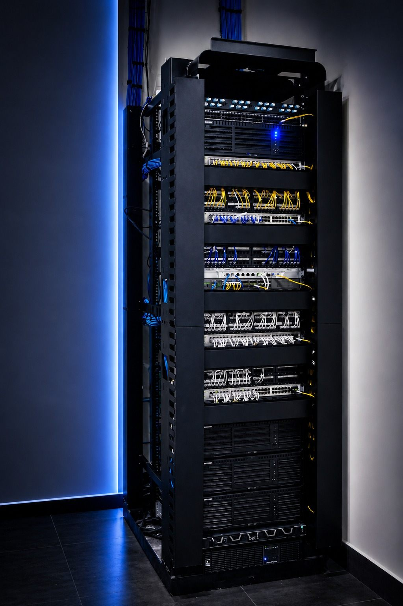
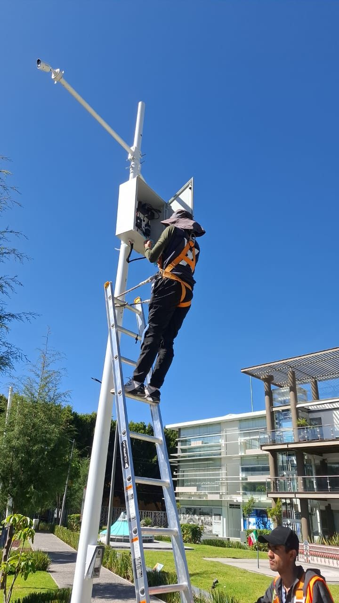

HoyActividadesAN-0031
Mantenimiento preventivo de DVR y 12 cámaras
Farmacia San Rafael
Sucursal Centro
Hoy, 10:00 a 13:00
Asignada
Ayer 18:20
Aceptada
Ayer 18:31
En camino
9:35
4
En sitio
Desde 10:06
5
En revisión
Tú apruebas
6
Completada
—
Evidencias
4 de 6 pasos · faltan 2 obligatorios para mandar a revisión
66%
 ValidadaDVR antes · 10:12 · GPS ✓
ValidadaDVR antes · 10:12 · GPS ✓
ValidadaRack y etiquetas · 10:15 Vista de 12 canales · 11:40
Vista de 12 canales · 11:40
Cámara 7, limpieza · 12:05Cámaras 8 a 12 despuésObligatorio
Firma del clienteOpcional
Línea de tiempo
José Antonio subió 2 fotos
Hace 35 min · desde el teléfono, dentro de la geocerca
Christian Del Pozo comentó
11:20
Revisa también el respaldo de 7 días antes de actualizar firmware, el cliente lo pidió.
José Antonio llegó al sitio
10:06 · 12 m del punto registrado
Salió hacia el sitio desde Oficinas Puebla
9:35 · vehículo NX-04